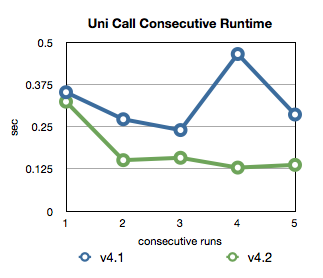

Uni Call
The missing universal audio, video call and text workflow for Alfred
Uni Call is an open source project and an Alfred workflow providing the fastest way to make whatever audio, video phone call or send whatever text message on your Mac OS X (ambitious :). It views your Apple Contacts (we love Apple address book and iCloud :) as the central place for all your contact information, and makes use of those information to help you initiate your phone calls or text messages as quickly as possible. Right now, Uni Call supports call components listed in Supported Call Components section. However, more could be added. Please let me know if you are interested!
If you like Uni Call, please consider making a small donation to me via PayPal as to show your thanks and support for my work :)

Supported Call Components
In general, Uni Call requires Mac OS X 10.8 or later. Some call components might require even newer version of Mac OS X. Please check corresponding call component usage for details.
| Call Component Name | Call Component Code | Audio Call Support | Video Call Support | Text Support | Default Working Mode | Via App | Tested App Version |
|---|---|---|---|---|---|---|---|
| iPhone Call | h | yes (bluetooth and wifi) | no | no (use Messages Call) | audio | FaceTime (Yosemite Continuity) | 3.0 (2142) |
| Messages Call | m | no | no | yes (iPhone sms, iMessage and Google Talk/Hangout) | text | Messages | 8.0 (4725) |
| FaceTime Call | f | yes | yes | no | video (can be changed) | FaceTime | 3.0 (2142) |
| Skype Call | s | yes | yes | yes | audio | Skype | 6.19 (452) |
| Phone Amego Call | p | yes (bluetooth) | no | no | audio | PhoneAmego | 1.4.30 |
| GrowlVoice Call | g | yes | no | yes | audio | GrowlVoice | 2.0.3 (30) |
| WeChat Call | w | no | no | yes | text | 1.2.0.18 | |
| SIP Call | i | yes | no | no | audio | Telephone | 1.1.4 (114) |
| Fritz!Box Call | z | yes | no | no | audio | Frizzix | 1.6.17 (1347) |
| CallTrunk Call | k | yes | no | no | audio | Call Trunk AU/UK/US | 1.0 (1.0) |
| PushDialer Call | d | yes (iOS notification) | no | no | audio | PushDialer | 1.7 (Build 64) |
| Dialogue Call | l | yes (bluetooth) | no | no | audio | Dialogue | 1.2.1 (76) |
Installation
- Make sure the Alfred (with version 2 and above) and Powerpack is installed
- Download the latest workflow: Uni-Call.alfredworkflow
- Double click on the downloaded workflow file to install
- (Optional) By default, the top 5 call components listed in Supported Call Components are enabled and in the order defined in the table. To enable, disable or reorder call components, please refer to Enable/disable/reorder Call Components
Upgrade
By default, Uni Call will automatically check for update. Upon new version, a notification will be delivered to you. You can also manually check for update using:
call --checkforupdateWhen a new version is available, you can simply confirm to let Uni Call automatically upgrade itself.
While automatic update is highly recommended, you can still manually download and repeat steps in Installation to upgrade. Furthermore, you can choose to upgrade through Packal.
When you do manual upgrade or using Packal to upgrade, please kill the process named Uni Call Satellite in advance. This ensures that after the upgrade, you can use the new Uni Call Satellite straight away instead of still using the old one. If you leave the old Uni Call Satellite running, it will exit itself after 5 min idle time. To know more about Uni Call Satellite, please refer to changelog of v4.2.
Support
Please using one of the following methods to get support:
1. file any issue from this GitHub issue tracker
2. leave comments on my blog page
3. post on the Uni Call topic section of official Alfred forum
4. email user feedback directly to me by typing call --contactauthor in Alfred
Privacy
The only Internet connection Uni Call uses is to check for update. None of your personal information will ever leave your machine via Uni Call.
License

Uni Call by Guan Gui is licensed under a Creative Commons Attribution-ShareAlike 4.0 International License.
Changelog
v6.031 (09/03/15)
- Fixed a bug that could automatically add phonetic names for non-Chinese names when Uni Call starts
v6.03 (09/03/15)
- Minor fix for WeChat Call
- Improved international name support: by normalising Unicode characters to their single code point representation at very beginning. This solves searching issues with non-standard English alphabet names, such as German, Chinese, Japanese or Korean.
v6.02 (16/01/15)
- Removed annoying notification when auto update checking is failed
- Fixed issue with the pcre library that Uni Call uses. It could cause crashes on some system settings.
v6.01 (13/01/15)
- Minor fix for
callmalias for Messages Call component
v6.0 (12/01/15)
- Now Uni Call can work in three modes seamlessly: audio (
-_), video call (-+) and text (-=) - Added support for FaceTime audio call. The default working mode for FaceTime is video call. Users can change using
call -f-setdefaultworkingmode - Added support for Yosemite iPhone continuity
- Added support for Messages, where user can text through iMessages, iPhone and Google Talk/Hangout. User’s Google Talk/Hangout real-time online status is represented in user’s thumbnail with different colours. Users can also turn on/off Google Talk/Hangout feature:
call -m-turntextinggtalk - Added support for WeChat
- Added option to turn on/off phone number results in SIP Call component:
call -i-turncallingphonenumber - Added support for phone number extension in accordance with iPhone standard. For example,
callh 1555,1;2will dial1555then pause for 2 sec and dial1then wait for user to tap Dial before dialling2. At the moment, only iPhone Call supports both;and,phone number extension syntax; Phone Amego Call will treat;and,the same, and use first part of phone number extensions only; all other call components will ignore phone number extensions. - Minor bug fixes for CallTrunk Call component
- Improved reverse phone number, username or address matching with their corresponding contact entry. Now, those contact entries matches those phone numbers, usernames or addresses better are shown first.
- Improved fuzzy searching: now you can use name initials, for example my name initials “gg” for “Guan Gui”, to carry out searching; also some performance improvement
- Improved support for Chinese users: now you can search with phonetic name initials, for example using “gg” to search for “桂冠”; Chinese names are automatically detected and displayed in correct order, i.e. last name is followed by first name without space in between, for example, the previous name “冠 桂” is now displayed as “桂冠”
- Improved support for retina displays
- Changed to a new logo. Special thanks to Dmitry Zaborskikh for the icon’s original design :)
- Added option to change call component default order:
call --reorder - Added option to send user feedback directly to my email address:
call --contactauthor - Added option to open documentation on Uni Call official site:
call --openhelpdocumentation - Added option to format phone numbers in Apple Contacts to their corresponding locale format:
call --formatcontactsphonenumbers - Added option to add Pinyin (phonetic names) for 中文名 (Chinese names):
call --addcontactsphoneticnames - Now contact actions and call components use the same facade
callinitiator.bashto communicate external call related applications. This solves issues previously reported of using GrowlVoice contact action and etc. - Removed special characters in file names. Now Uni Call is compatible with sync solutions other than Dropbox, such as Microsoft OneDrive.
- Dropped support for old alleyoop updater, and added automatically check for update functionality. Users can also manually check for update:
call --checkforupdate. Notifications will be shown upon a new version or failure. When a new version is available, users can simply confirm to let Uni Call automatically update itself. Users can also usecall --turnautoupdatechecking offto turn off auto update checking. Furthermore, added support for upgrading through Packal.
v5.31 (15/12/13)
- Changed Skype Call component to use the URL Scheme method which will be the only Skype API supported in the future Skype versions.
v5.3 (28/09/13)
- Added support for Dialogue, which is an alternative to Phone Amego making bluetooth phone calls. It provides a more elegant UI and a call recording functionality.
v5.2 (13/06/13)
- Now Skype Call component is compatible with the new Skype 6.5: the original skypecall.scpt AppleScript is rewritten in Objective C using Skype framework. The new Skype Call component is now more efficient and robust.
v5.1 (07/06/13)
- Fixed a minor bug of Skype Call that could prevent non-English platform from working properly
- Added CallTrunk Call component. The user can use –setdefaultcountry long option to set a default country specific Call Trunk to use. Also, the user can provide an extra parameter to overwrite the default country, for example, using “callk guan gui /au” to call Guan Gui via AU version of Call Trunk.
- Added Fritz!Box Call component
v5.03 (23/05/13)
- Now those labels for phone number fields in Apple Contacts are shown in front of phone numbers in Uni Call, which can allow you to quickly recognise right phone number target for business, for home etc. Multiple labels can also be used, which are separated by commas. Therefore, you can use FaceTime target nomination along with traditional contact labels, such as using label “iPhone, home”.
v5.02 (21/05/13)
- Minor bug fixes: now Uni Call will at least fully output results for one matched contact before enforcing result number limit to improve the responsiveness.
v5.01 (20/05/13)
- Minor bug fixes: now even if a TARGET is not identified in Apple Contacts, user’s preferences of the TARGET’s call options will be learnt as well
v5.0 (19/05/13)
- Added SIP Call component
- Added PushDialer Call component
- Added GrowlVoice Call component
- Update for Phone Amego Call: the user can select which bluetooth device to use (“callp TARGET /DEVICE_ALIAS_OR_DEVICE_LABEL”) for making a phone call. The user can also assign an easy to remember alias to a complicated device label.
- Now the user can completely enable/disable call components through “call –enable”/”call –disable”. When a call component is disabled, its corresponding Alfred Preferences will be automatically removed; later when it is enabled again, its Alfred Preferences will then be automatically restored.
- The thumbnail cache folder is now moved from ~/Library/Caches/net.guiguan.Uni-Call/thumbnails to ~/Library/Application Support/Alfred 2/Workflow Data/net.guiguan.Uni-Call/thumbnails, which ensures that Uni Call will be uninstalled with Alfred 2.
- Added a persistent configuration file config.plist in ~/Library/Application Support/Alfred 2/Workflow Data/net.guiguan.Uni-Call. The reason why this config.plist is not placed inside Uni Call workflow folder but in Workflow Data folder is to make sure that the user’s configurations will stay unchanged after future workflow upgrades.
v4.21 (14/05/13)
- Minor bug fixes: now handles spaces in POSIX path to the workflow. Before, those spaces could cause problem for Uni Call Basestation to launch Uni Call.
- Minor bug fixes: Skype Call can now correctly generate notifications in Mac OS X Notification Centre.
v4.2 (12/05/13)
- The original Uni Call executable is now divided into two separate parts: the Uni Call Basestation and the Uni Call. The Uni Call Basestation is the one invoked everytime by Alfred, while the Uni Call is in turn spawned by Uni Call Basestation, which will continue to run in the background unless idling for 5 min. Basically, the Uni Call will sit there and wait to serve requests come from Uni Call Basestation (via TCP port number 28642). In this way, the consecutive requests come from Alfred could be served more quickly by Uni Call. In fact, it does improve the response time by 50% (Refer to the following figure)!

- Options can now be used everywhere among the query. So “call guan -s gui” is equivalent to “call -s guan gui” and “call guan gui -s”.
v4.1 (7/05/13)
- Did some performance tweak. Now Uni Call runs much faster.
v4.0 (4/05/13)
- Big changes to original Skype Call workflow and renamed it to Uni Call. FaceTime and Phone Amego Call components are introduced.